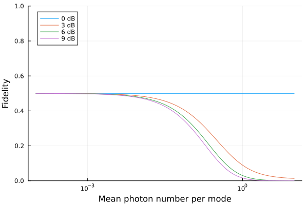

Getting Started
Installation
Genqo.jl requires Julia 1.12 or later. Install it from the Julia REPL:
using Pkg
Pkg.add("Genqo")Genqo builds on Gabs.jl for Gaussian states and unitaries, and returns density matrices as QuantumOpticsBase.jl operators, so one generally loads Gabs alongside it.
How a model is built
An entanglement source in Genqo is a pure Gaussian circuit followed by photon-number-resolved detection. Building one follows four general steps:
- Build a pure Gaussian state with Gabs.
- Specify a detection outcome with a
projector. - Combine the two with
project. - Ask for the quantity you want.
Step 3 computes nothing. The projected state is a description of a measurement, and the work happens only when a particular quantity is requested in step 4.
A first heralded state
Start with a two-mode squeezed vacuum state and herald on a coincidence click:
using Genqo, Gabs
μ = 1e-2 # mean photon number per mode
st = eprstate(QuadBlockBasis(2), asinh(√μ), 0.)
ρ = project(st, projector([1, 1]); η = [0.9, 0.8])
tr(ρ)0.007063724646720093projector([1, 1]) is the outcome "one photon in each mode", η is the per-mode detector efficiency, and tr is the probability that the herald fires.
Leaving modes undetected
A colon marks a mode that is not measured. Those modes survive the projection and carry the heralded state:
ρ = project(st, projector([1, :]); η = [0.9, 1.0])
freemodes(ρ)1-element Vector{Int64}:
2to_fock gives the resulting density matrix over exactly those free modes:
to_fock(ρ)Operator(dim=3x3)
basis: Fock(cutoff=2)
0.0+0.0im 0.0+0.0im 0.0+0.0im
0.0+0.0im 0.00882266+0.0im 0.0+0.0im
0.0+0.0im 0.0+0.0im 1.74706e-5+0.0imBuilding a circuit
As an example, we will show the ZALM source, which consists of two TMSV states, two mode swaps, and a pair of 50/50 beamsplitters forming a partial Bell-state measurement.
function zalm2(μ, ηR, ηT)
st = eprstate(QuadBlockBasis(8), asinh(√μ), 0.)
apply!(st, [2,4, 5,7], modeswap(QuadBlockBasis(4)))
apply!(st, [3,5, 4,6], beamsplitter(QuadBlockBasis(4), 0.5))
η = [ηR,ηR,ηT,ηT,ηT,ηT,ηR,ηR]
project(st, projector([:,:,1,1,0,0,:,:]); η = η)
endzalm2 (generic function with 1 method)The four detected modes in the middle are the BSM; the two outer pairs are left free and hold the heralded photon-photon state.
Probability of generation
The probability that a particular click outcome occurs is simply the trace of the (unnormalized) photon-photon state:
state_heralded = zalm2(1e-2, 1.0, 0.9)
tr(state_heralded)7.676054003184283e-5Fidelity with respect to a target state
A target state is built with clicks and ordinary arithmetic. It specifies outcomes on the free (non-:) modes only:
ψ⁺ = (clicks([1,0,0,1]) + clicks([0,1,1,0])) / √2
state_heralded = zalm2(1e-2, 1.0, 0.9)
fidelity(ψ⁺, state_heralded) |> real0.4970370454919707Note the distinction: projector describes a measurement outcome and can contain :, while clicks describes a target state and cannot. See Click States and Projectors.
Sweeping parameters
Everything broadcasts, so a sweep is a dot call:
using Plots
μs = logrange(1e-4, 10, 100)
ηTs = 10 .^ -([0, 3, 6, 9] / 10) # transmission loss in dB
F = real.(fidelity.(Ref(ψ⁺), zalm2.(μs, 1.0, ηTs')))
plot(μs, F, xscale=:log10, ylim=(0,1), legend=:topleft, xlabel="Mean photon number per mode", ylabel="Fidelity", label = ["0 dB" "3 dB" "6 dB" "9 dB"])
Transposing ηTs makes Julia broadcast it against μs as a second axis, giving one curve per loss value.
Loading into quantum memories
duankimble and emissiveload load the heralded photons into memories and return the spin density matrix:
ρ = duankimble(zalm2(1e-2, 1.0, 0.9), [1,0,1,0])
tr(ρ)9.53820800694883e-6 + 0.0imThat matrix is evaluated lazily. tr needs only the diagonal, so only the diagonal was ever contracted:
ncomputed(ρ.data), length(ρ.data)(4, 16)It still behaves like an ordinary dense operator, and any whole-matrix operation materializes it. See Memory Loading.